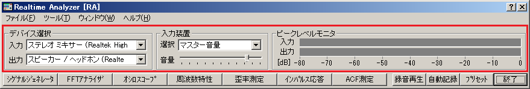

DSSF3 > RA > リファレンス > メインウィンドウ

| 項目 | 説明 | |
|---|---|---|
| デバイス選択 | 入力 | 使用可能なサウンドデバイスが表示されますので、入力に使用するサウンドデバイスを選択してください。ASIOドライバの場合は名称の前に"[ASIO]"という文字が付加されて表示されます。 |
| 出力 | 使用可能なサウンドデバイスが表示されますので、出力に使用するサウンドデバイスを選択してください。ASIOドライバの場合は名称の前に"[ASIO]"という文字が付加されて表示されます。 | |
| 入力装置 | 選択 | 入力デバイスの入力ソースを選択します。Windowsのボリュームコントロールの録音デバイスの選択と同じです。日本語OSで英語版を実行すると文字化けすることがあります。ただ、並び順は共通でなので、ボリュームコントロールの並び順を参考にしてください。ここではマイクや、ラインイン、ミキサー、WAVEなどの表示が一般的です。 |
| 音量 | 入力信号の音量を調整します。入力レベル不足で小さすぎないように、入力ピークレベルメーターをみて調整します。また過大入力で歪まないようにピークレベルメーターとオシロスコープを使って調整します。 | |
| ピークレベルモニタ | 入力 | 入力信号のピークレベルを表示します。 |
| 出力 | 出力信号のピークレベルを表示します。シグナルジェネレータのデジタル振幅（デジタルボリューム）で調整できます。 | |
DSSF3 > RA > リファレンス > メインウィンドウ